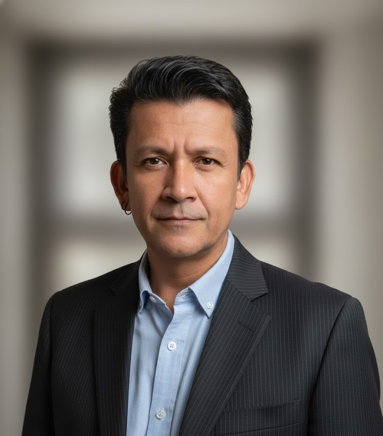

ECONOMÍA · EVIDENCIA · POLÍTICAS PÚBLICAS
Ph.D. en Economía · Magíster en Políticas Públicas y Economía · Especialista MEAL
Monitoreo & Evaluación • Políticas Públicas • Medios de Vida y Resiliencia • Desarrollo Económico
Convierto datos y evidencia en decisiones, aprendizaje y mejoras concretas en políticas, programas y proyectos.
Bogotá D.C., Colombia · +57 314 791 1387

FM01 / PERFIL PROFESIONAL
Experiencia consolidada en cooperación internacional, monitoreo y evaluación (MEAL), formulación de políticas públicas y desarrollo de medios de vida, con trayectoria en agencias del Sistema de Naciones Unidas (UNFPA, WFP, UNODC), entidades de gobierno y organizaciones de la sociedad civil.
Experto en diseño de sistemas de seguimiento basados en resultados, análisis de datos cuantitativos y cualitativos, visualización de información (Power BI, Excel avanzado, SPSS) y liderazgo de equipos multidisciplinarios. Orientado a resultados medibles, con enfoque diferencial de género y protección.
Historial comprobado de entrega de productos de alta calidad bajo estándares de donantes internacionales, con fuerte capacidad de adaptación a contextos complejos y fortalecimiento institucional.
Cada dato debe tener un propósito, cada indicador aportar evidencia útil y cada hallazgo traducirse en decisiones, aprendizaje y mejores resultados.
Contratos de corta y larga duración; misiones en territorio nacional e internacional. Sin impedimentos de salud ni de otra índole para viajes aéreos. Referencias disponibles a solicitud (UNFPA, WFP, ICBF y otras entidades).
02 / EXPERIENCIA PROFESIONAL
Línea de tiempo y distribución de la experiencia. Despliega cada cargo para ver funciones y logros.
Línea de tiempo por cargo
Meses por tipo de entidad
Calculado a partir de las fechas de cada cargo.
03 / CAPACIDADES PROFESIONALES
Ruta de trabajo
04 / FORMACIÓN ACADÉMICA
Línea de tiempo académica
05 / PRODUCCIÓN INTELECTUAL
Publicaciones por tipo
06 / COMPETENCIAS CLAVE
HABLEMOS DE RESULTADOS
Consultorías, MEAL, políticas públicas, analítica de datos y trabajo territorial.
Bogotá D.C., Colombia · felipe.moreno@monitora.com.co · +57 314 791 1387